library(tidyverse)
library(palmerpenguins)
library(patchwork)
library(scales)
set.seed(2026)
# Un tema común para todo el cuaderno
theme_set(theme_minimal(base_size = 12) +
theme(plot.title.position = "plot",
panel.grid.minor = element_blank()))Visualización de datos con ggplot2
Minicurso de R · Módulo 3
R
visualización
ggplot2
gráficos
La gramática de gráficos en la práctica: geometrías, color, facetas, leyendas, ajustes y gráficos interactivos, con criterios para elegir el gráfico adecuado.
Objetivos de aprendizaje
Al terminar este cuaderno podrás:
- Construir un gráfico como una suma de capas usando la gramática de gráficos.
- Elegir la geometría adecuada según el tipo de variable y la pregunta.
- Usar color de forma legible y accesible (incluyendo personas con daltonismo).
- Dividir un gráfico en facetas, combinar paneles y ajustar leyendas y temas.
- Representar incertidumbre (barras de error, bandas) y detectar valores atípicos.
- Guardar figuras con calidad de publicación y crear versiones interactivas.
1. Teoría: la gramática de gráficos
Un gráfico de ggplot2 se construye combinando componentes independientes (Wilkinson, 2005; Wickham, 2010):
| Componente | Pregunta | Ejemplo |
|---|---|---|
| Datos | ¿Qué se grafica? | penguins |
Estéticas (aes) |
¿Qué variable va a qué propiedad visual? | x, y, colour, size, shape |
Geometrías (geom_*) |
¿Con qué formas? | puntos, líneas, barras |
Escalas (scale_*) |
¿Cómo se traduce un valor a una propiedad visual? | ejes, paletas de color |
Facetas (facet_*) |
¿Se divide en paneles? | un panel por especie |
Coordenadas (coord_*) |
¿Qué sistema de ejes? | cartesiano, polar, invertido |
Tema (theme_*) |
¿Cómo se ve el resto? | fuentes, fondos, cuadrículas |
Se suman con +. Empecemos con el gráfico más simple, un diagrama de dispersión, y agreguemos una capa a la vez:
p <- ggplot(penguins, aes(flipper_length_mm, body_mass_g))
g_a <- p + geom_point() + labs(title = "a")
g_b <- p + geom_point(aes(colour = species)) + labs(title = "b")
g_c <- p + geom_point(aes(colour = species), alpha = 0.6) +
geom_smooth(aes(colour = species), method = "lm", se = FALSE) + labs(title = "c")
g_a | g_b | g_c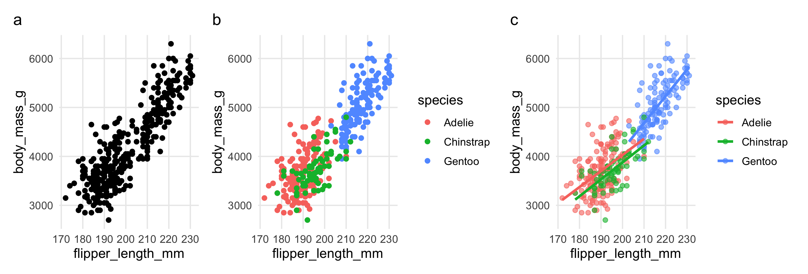
TipConsejo: dónde poner
aes()
Una estética puesta en ggplot(aes(...)) la heredan todas las capas. Puesta dentro de un geom_* solo afecta a esa capa. Si quieres un color fijo (no ligado a una variable), va fuera de aes(): geom_point(colour = "red").
2. Elegir el gráfico según la pregunta
| Quiero mostrar… | Variables | Geometría |
|---|---|---|
| La distribución de una variable | 1 numérica | geom_histogram(), geom_density() |
| Comparar distribuciones entre grupos | numérica + categórica | geom_boxplot(), geom_violin(), geom_jitter() |
| Una relación | 2 numéricas | geom_point() + geom_smooth() |
| Una evolución en el tiempo | numérica + fecha | geom_line() |
| Cantidades por categoría | numérica + categórica | geom_col() (barras) |
| Composición o proporciones | categóricas | geom_bar(position = "fill") |
Distribuciones
pd <- drop_na(penguins, body_mass_g)
h <- ggplot(pd, aes(body_mass_g)) +
geom_histogram(bins = 25, fill = "grey70", colour = "white") +
labs(x = "Masa (g)", y = "Frecuencia", title = "Histograma")
d <- ggplot(pd, aes(body_mass_g, fill = species)) +
geom_density(alpha = 0.55, colour = NA) +
scale_fill_brewer(palette = "Set2", name = NULL) +
labs(x = "Masa (g)", y = "Densidad", title = "Densidad") +
theme(legend.position = "bottom")
b <- ggplot(pd, aes(species, body_mass_g, colour = species)) +
geom_jitter(width = 0.15, alpha = 0.4, size = 1) +
geom_boxplot(fill = NA, colour = "black", outlier.shape = NA, width = 0.5) +
scale_colour_brewer(palette = "Set2", guide = "none") +
labs(x = NULL, y = "Masa (g)", title = "Caja + puntos")
h | d | b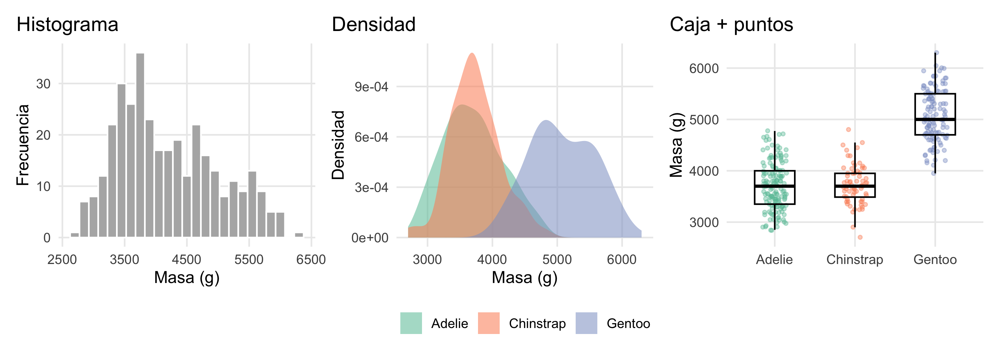
Un diagrama de cajas resume la distribución con cinco números: la mediana (línea central), el primer y tercer cuartil (bordes de la caja) y los bigotes, que llegan hasta el dato más lejano que esté a menos de 1,5 veces el rango intercuartílico (\(IQR = Q_3 - Q_1\)) de la caja. Los puntos más allá de los bigotes se marcan como posibles valores atípicos.
# Identificar los valores atípicos con la regla de 1.5 * IQR
atipicos <- function(x) {
q <- quantile(x, c(0.25, 0.75), na.rm = TRUE)
iqr <- diff(q)
x < q[1] - 1.5 * iqr | x > q[2] + 1.5 * iqr
}
penguins |>
drop_na(body_mass_g) |>
group_by(species) |>
filter(atipicos(body_mass_g)) |>
select(species, island, sex, body_mass_g)# A tibble: 2 × 4
# Groups: species [1]
species island sex body_mass_g
<fct> <fct> <fct> <int>
1 Chinstrap Dream male 4800
2 Chinstrap Dream female 2700
WarningUn valor atípico no es un error
Antes de eliminar un dato extremo verifica si es un error de medición o de digitación, o si es un valor real e informativo. Documenta siempre qué hiciste y por qué.
Barras con incertidumbre
Un promedio sin su incertidumbre es media historia. El intervalo de confianza del 95 % de la media es \(\bar{x} \pm t_{0.975,\,n-1}\, s/\sqrt{n}\):
resumen <- penguins |>
drop_na(body_mass_g, sex) |>
group_by(species, sex) |>
summarise(n = n(), media = mean(body_mass_g), ee = sd(body_mass_g) / sqrt(n),
ic = qt(0.975, n - 1) * ee, .groups = "drop")
ggplot(resumen, aes(species, media, colour = sex)) +
geom_pointrange(aes(ymin = media - ic, ymax = media + ic),
position = position_dodge(width = 0.4), size = 0.7) +
scale_colour_manual(values = c(female = "#e76f51", male = "#264653"),
labels = c("Hembra", "Macho"), name = NULL) +
labs(x = NULL, y = "Masa corporal (g)")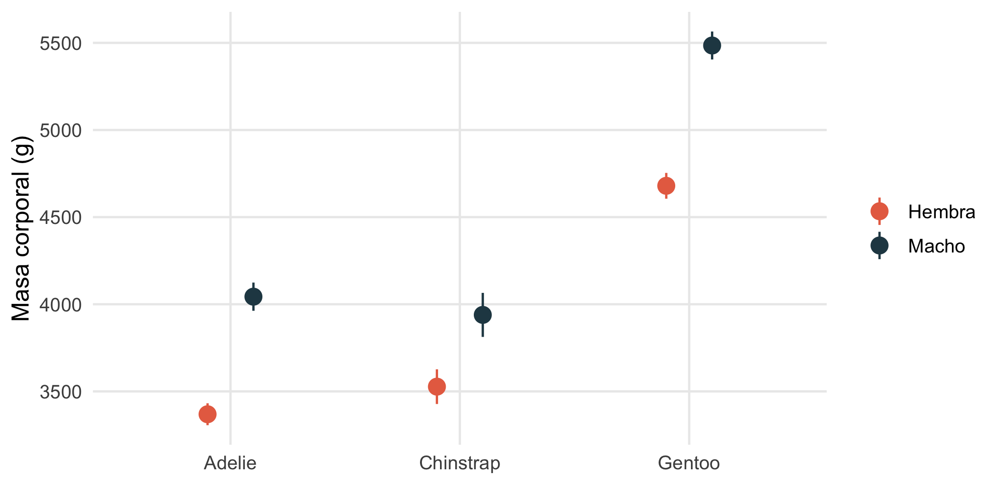
Relaciones y ajustes
geom_smooth() agrega una curva de tendencia. Con method = "lm" se ajusta un modelo lineal (o polinomial con formula) y con method = "loess" una curva local flexible.
n <- 80
sim <- tibble(x = runif(n, 0, 10), y = 3 + 2 * x - 0.22 * x^2 + rnorm(n, sd = 1.2))
base <- ggplot(sim, aes(x, y)) + geom_point(alpha = 0.6, colour = "grey30")
(base + geom_smooth(method = "lm", colour = "#e76f51", fill = "#e76f51", alpha = 0.2) + labs(title = "Recta")) |
(base + geom_smooth(method = "lm", formula = y ~ poly(x, 2), colour = "#2a9d8f", fill = "#2a9d8f", alpha = 0.2) + labs(title = "Polinomio grado 2")) |
(base + geom_smooth(method = "loess", formula = y ~ x, colour = "#264653", fill = "#264653", alpha = 0.2) + labs(title = "LOESS"))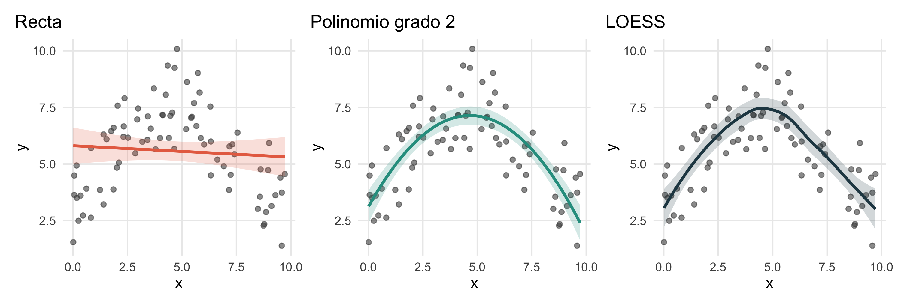
Cuando la relación se ve curva, una recta subestima el patrón; el polinomio de grado 2 lo captura con solo un parámetro adicional. Un grado demasiado alto sobreajusta: sigue el ruido y predice mal datos nuevos.
3. Color
El color es la estética más poderosa y la más mal usada. Tres reglas prácticas:
- Categorías sin orden → paleta cualitativa (
Set2,Dark2,Okabe-Ito). - Valores ordenados de bajo a alto → paleta secuencial (
viridis,Blues). - Valores con un punto medio importante (anomalías, diferencias) → paleta divergente (
RdBu) centrada en cero.
Además, cerca del 8 % de los hombres tiene alguna forma de daltonismo, por lo que debes evitar depender solo de rojo-verde. Las paletas viridis y Okabe-Ito están diseñadas para ser distinguibles.
okabe <- c("#E69F00", "#56B4E9", "#009E73", "#F0E442", "#0072B2", "#D55E00", "#CC79A7")
cual <- ggplot(pd, aes(flipper_length_mm, body_mass_g, colour = species)) +
geom_point(alpha = 0.7) +
scale_colour_manual(values = okabe[c(2, 6, 3)], name = NULL) +
labs(title = "Cualitativa", x = "Aleta (mm)", y = "Masa (g)") +
theme(legend.position = "bottom")
secu <- ggplot(pd, aes(flipper_length_mm, body_mass_g, colour = bill_length_mm)) +
geom_point(alpha = 0.8) +
scale_colour_viridis_c(name = "Pico (mm)") +
labs(title = "Secuencial", x = "Aleta (mm)", y = NULL) +
theme(legend.position = "bottom")
dive <- pd |> mutate(z = as.numeric(scale(body_mass_g))) |>
ggplot(aes(flipper_length_mm, body_mass_g, colour = z)) +
geom_point(alpha = 0.8) +
scale_colour_distiller(palette = "RdBu", limits = c(-3, 3), direction = 1, name = "Puntaje z") +
labs(title = "Divergente", x = "Aleta (mm)", y = NULL) +
theme(legend.position = "bottom")
cual | secu | dive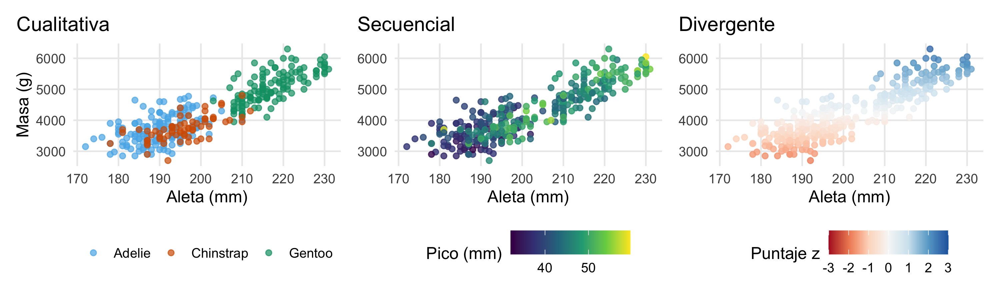
4. Series de tiempo y anomalías
Las series temporales se grafican con geom_line(). Un caso frecuente en ciencias del clima es resaltar las anomalías positivas y negativas respecto a una referencia, como en los índices de El Niño. Simulamos un índice mensual con un ciclo de unos 4 años:
meses <- seq(as.Date("2000-01-01"), by = "month", length.out = 240)
indice <- 1.1 * sin(2 * pi * (1:240) / 48) + arima.sim(list(ar = 0.8), n = 240, sd = 0.35)
serie <- tibble(fecha = meses, indice = as.numeric(indice)) |>
mutate(positivo = pmax(indice, 0), negativo = pmin(indice, 0))
ggplot(serie, aes(fecha)) +
geom_ribbon(aes(ymin = 0, ymax = positivo), fill = "#d1495b") +
geom_ribbon(aes(ymin = negativo, ymax = 0), fill = "#2e6fa7") +
geom_hline(yintercept = 0, linewidth = 0.3) +
labs(x = NULL, y = "Anomalía")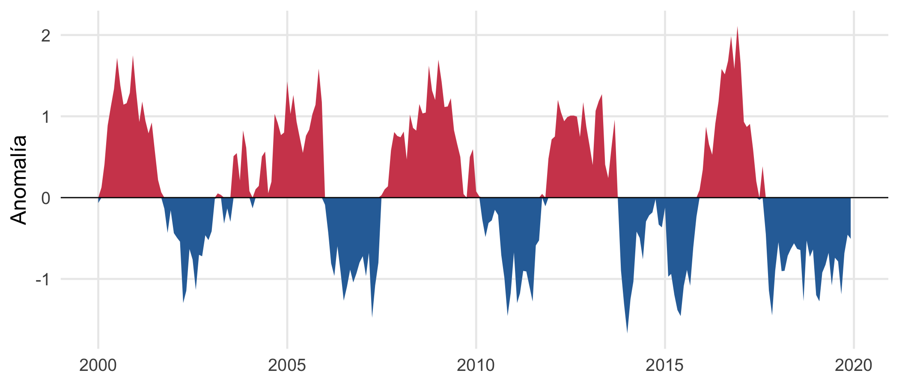
WarningEvita los ejes secundarios
Dos series con escalas distintas en un mismo gráfico (eje y izquierdo y derecho) pueden sugerir correlaciones falsas porque quien dibuja controla la escala de cada eje. Es preferible dos paneles con el mismo eje x, uno encima del otro.
economics |>
filter(date >= as.Date("2000-01-01")) |>
select(date, `Desempleo (miles)` = unemploy, `Ahorro personal (%)` = psavert) |>
pivot_longer(-date) |>
ggplot(aes(date, value)) +
geom_line(colour = "#264653") +
facet_wrap(~ name, ncol = 1, scales = "free_y") +
labs(x = NULL, y = NULL)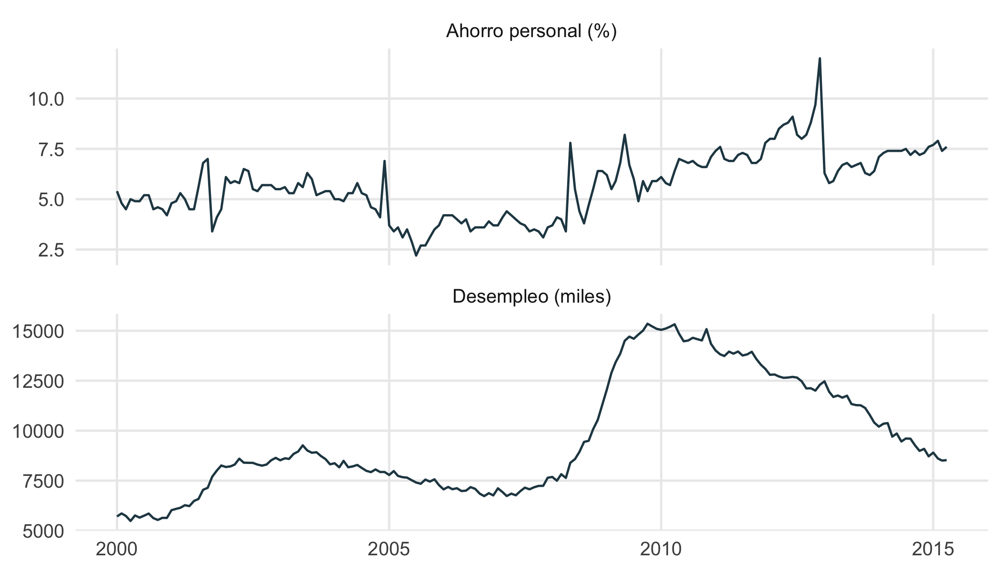
5. Facetas y paneles
Las facetas repiten el mismo gráfico para cada nivel de una variable, lo que compara subgrupos sin sobrecargar un solo panel:
pd2 <- drop_na(penguins, sex)
ggplot(pd2, aes(bill_length_mm, bill_depth_mm)) +
geom_point(aes(colour = sex), alpha = 0.7) +
geom_smooth(method = "lm", se = FALSE, colour = "black", linewidth = 0.6) +
facet_wrap(~ species) +
scale_colour_manual(values = c(female = "#e76f51", male = "#264653"),
labels = c("Hembra", "Macho"), name = NULL) +
labs(x = "Largo del pico (mm)", y = "Profundidad del pico (mm)") +
theme(legend.position = "bottom")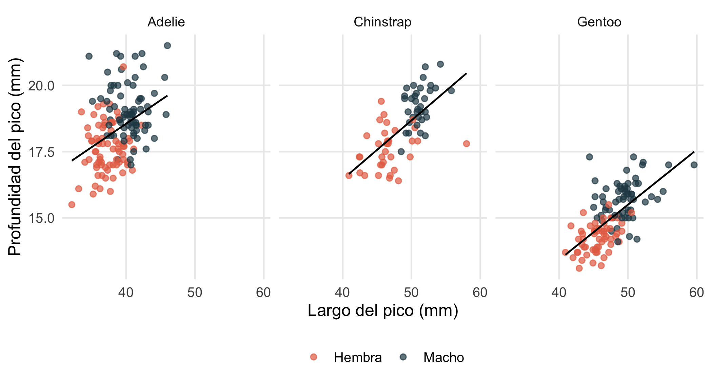
Para combinar gráficos distintos en una figura usa patchwork: a | b los pone lado a lado, a / b uno encima del otro y plot_annotation() agrega títulos y letras de panel. Ya lo hemos usado en este cuaderno.
6. Leyendas, ejes y temas
La mayoría de los retoques finales se hacen con labs(), las escalas y theme():
ggplot(pd, aes(flipper_length_mm, body_mass_g, colour = species, shape = species)) +
geom_point(size = 2, alpha = 0.75) +
scale_colour_manual(values = okabe[c(2, 6, 3)], name = "Especie") +
scale_shape_manual(values = c(16, 17, 15), name = "Especie") + # misma "name" => leyenda única
scale_y_continuous(labels = label_number(big.mark = ".", decimal.mark = ","),
breaks = seq(3000, 6000, by = 1000)) +
labs(title = "Los pingüinos Gentoo son más grandes",
subtitle = "Masa corporal según el largo de la aleta",
x = "Largo de la aleta (mm)", y = "Masa corporal (g)",
caption = "Fuente: Horst, Hill y Gorman (2020), paquete palmerpenguins") +
guides(colour = guide_legend(nrow = 1)) +
theme(legend.position = "top",
legend.justification = "left",
plot.title = element_text(face = "bold"))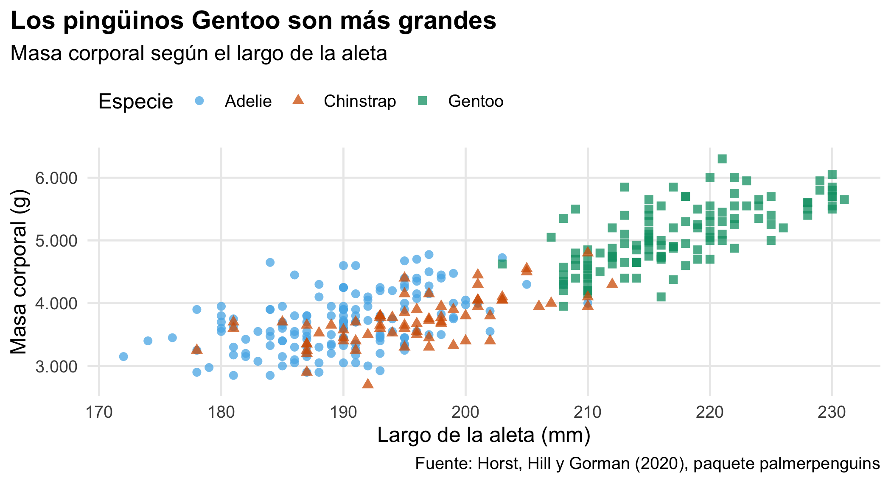
Elementos útiles de theme(): legend.position ("top", "bottom", "none" o coordenadas), axis.text.x = element_text(angle = 45, hjust = 1) para etiquetas largas, panel.grid, text = element_text(family = ...). Para reordenar categorías usa fct_reorder() (Módulo 2).
7. Guardar y compartir
g <- ggplot(pd, aes(flipper_length_mm, body_mass_g)) + geom_point()
ggsave("figuras/aletas_masa.png", g, width = 16, height = 10, units = "cm", dpi = 300)
ggsave("figuras/aletas_masa.pdf", g, width = 16, height = 10, units = "cm") # vectorialPara revistas usa formato vectorial (PDF o SVG) si es posible, o PNG a 300 dpi como mínimo. Define siempre el tamaño en centímetros y ajusta base_size del tema para que el texto tenga entre 8 y 12 puntos en la figura final.
Gráficos interactivos
plotly::ggplotly() convierte un gráfico de ggplot2 en una versión interactiva (zoom, información al pasar el mouse). Es útil en páginas web como esta, aunque no en artículos impresos.
library(plotly)
g <- ggplot(pd, aes(flipper_length_mm, body_mass_g, colour = species,
text = paste0("Isla: ", island, "<br>Sexo: ", sex))) +
geom_point(alpha = 0.7) +
scale_colour_manual(values = okabe[c(2, 6, 3)]) +
labs(x = "Aleta (mm)", y = "Masa (g)", colour = NULL)
ggplotly(g, tooltip = c("x", "y", "text"))Ejercicios
- Capas. Con
penguins, haz un diagrama de dispersión del largo del pico (bill_length_mm) contra su profundidad (bill_depth_mm), coloreando por especie y con una recta de ajuste global (en negro) y una recta por especie. - Distribuciones. Compara la distribución del largo de aleta por isla con
geom_violin()y superpón las medianas constat_summary(). - Color. Reproduce un gráfico con la paleta
scale_fill_viridis_d()y verifica que se distingue al convertirlo a escala de grises. - Facetas. Grafica
mpg(displcontrahwy) con una faceta por clase de vehículo (class) y ordena los paneles por la mediana dehwy. - Series. Con
economics, grafica el desempleo (unemploy) y sombrea los años de recesión (2008–2009) conannotate("rect", ...).
NoteSoluciones sugeridas
# 1
ggplot(pd, aes(bill_length_mm, bill_depth_mm)) +
geom_point(aes(colour = species), alpha = 0.6) +
geom_smooth(method = "lm", se = FALSE, colour = "black") +
geom_smooth(aes(colour = species), method = "lm", se = FALSE)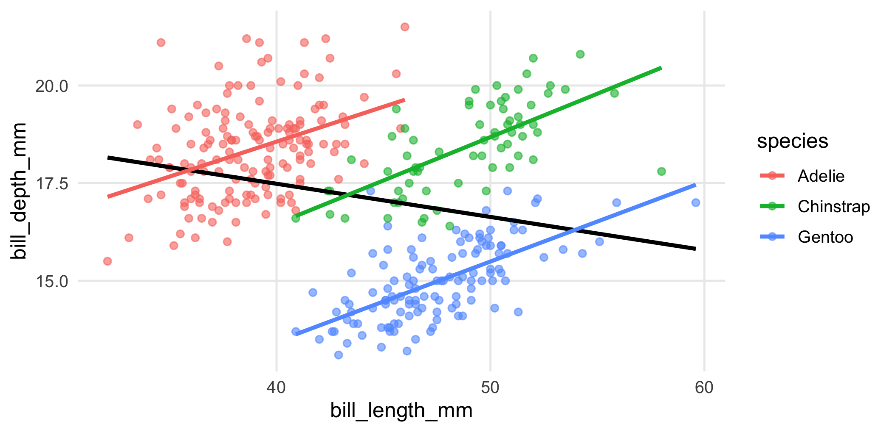
# 2
ggplot(pd, aes(island, flipper_length_mm, fill = island)) +
geom_violin(alpha = 0.6, colour = NA) +
stat_summary(fun = median, geom = "point", size = 3) +
scale_fill_viridis_d(guide = "none")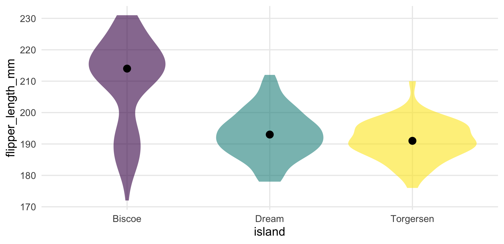
# 4
mpg |>
mutate(class = fct_reorder(class, hwy, .fun = median)) |>
ggplot(aes(displ, hwy)) + geom_point(alpha = 0.6) + facet_wrap(~ class)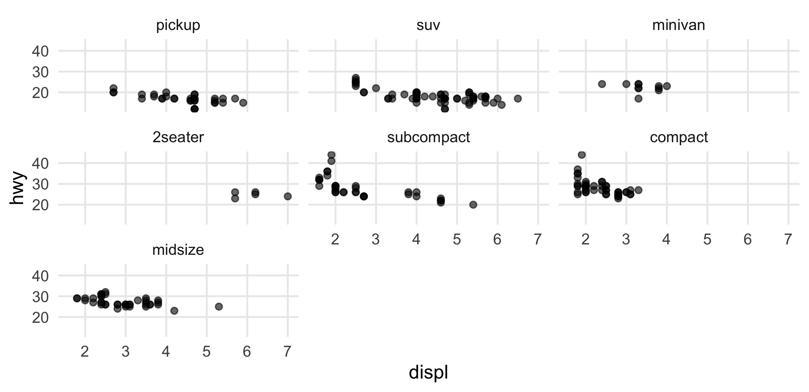
# 5
ggplot(economics, aes(date, unemploy)) +
annotate("rect", xmin = as.Date("2008-01-01"), xmax = as.Date("2009-12-31"),
ymin = -Inf, ymax = Inf, alpha = 0.2, fill = "red") +
geom_line()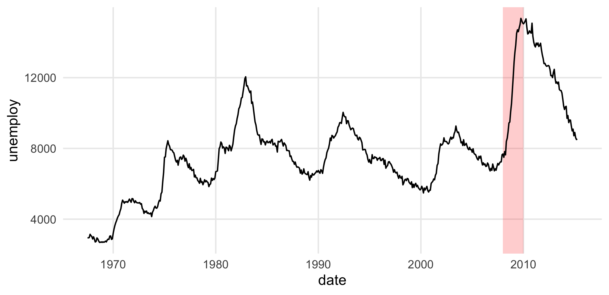
Para profundizar
- Wickham, H. (2010). A layered grammar of graphics. Journal of Computational and Graphical Statistics, 19(1), 3–28.
- Wickham, H., Navarro, D. y Pedersen, T. L. (2025). ggplot2: Elegant Graphics for Data Analysis (3.ª ed.). ggplot2-book.org.
- Wilke, C. O. (2019). Fundamentals of Data Visualization. O’Reilly. clauswilke.com/dataviz.
- Galería de tipos de gráfico: r-graph-gallery.com.
- Horst, A. M., Hill, A. P. y Gorman, K. B. (2020). palmerpenguins. https://allisonhorst.github.io/palmerpenguins/